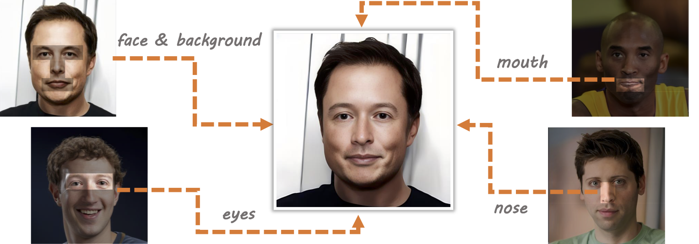
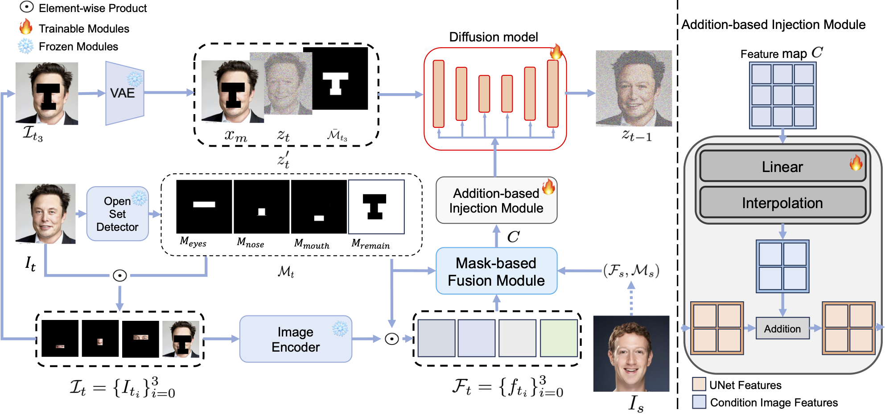
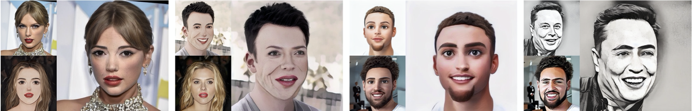
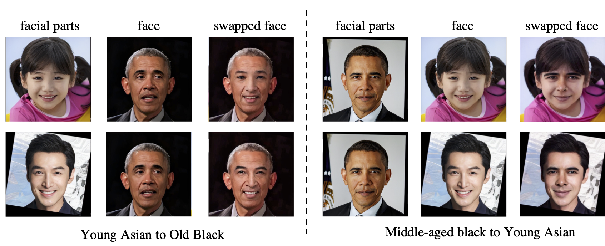

FuseAnyPart: Diffusion-Driven Facial Parts Swapping via Multiple Reference Images
Zheng Yu2
Yaohua Wang1
Siying Cui3
Aixi Zhang1
Wei-Long Zheng2
Senzhang Wang4
1Alibaba Group
2SJTU
3PKU
4CSU

Results of facial parts swapping using the proposed FuseAnyPart at 512 x 512 resolution.
The swapped face (central image) is generated by fusing the original face (top-left image) with three facial part reference images (bottom-left, top-right, bottom-right).
Notably, FuseAnyPart can seamlessly blend facial parts from multiple reference images with significant differences in appearance, producing high-fidelity and natural-looking swapped faces.
[Paper]
[BibTeX]
[Code]
Abstract
Facial parts swapping aims to selectively transfer regions of interest from the source image onto the target image while maintaining the rest of the target image unchanged.
Most studies on face swapping designed specifically for full-face swapping, are either unable or significantly limited when it comes to swapping individual facial parts, which hinders fine-grained and customized character designs.
However, designing such an approach specifically for facial parts swapping is challenged by a reasonable multiple reference feature fusion, which needs to be both efficient and effective.
To overcome this challenge, FuseAnyPart is proposed to facilitate the seamless "fuse-any-part" customization of the face.
In FuseAnyPart, facial parts from different people are assembled into a complete face in latent space within the Mask-based Fusion Module.
Subsequently, the consolidated feature is dispatched to the Addition-based Injection Module for fusion within the UNet of the diffusion model to create novel characters.
Extensive experiments qualitatively and quantitatively validate the superiority and robustness of FuseAnyPart.
Overview of FuseAnyPart

Illustration of FuseAnyPart.
The process begins with an open-set detector identifying a facial image to obtain various facial part masks.
Following this, an image encoder uses these masks and the facial image to derive the corresponding facial part feature.
These facial part features and masks are then fed into the Mask-based Fusion Module to piece together a complete face in latent space.
Subsequently, the consolidated feature is dispatched to the Addition-based Injection Module for fusion within the UNet of the diffusion model.
FuseAnyPart Results
Qualitative comparison of eyes swapping. FuseAnyPart produces high-fidelity results that maintain the consistency of facial features while ensuring a natural appearance.

Qualitative comparison of nose swapping.

Qualitative comparison of mouth swapping.

Qualitative comparison of multiple facial parts swapping with a single reference face. FuseAnyPart can naturally replace multiple facial parts of one face with those of another and better preserve both the characteristics and the facial part shape.

Qualitative comparison of multi swapping with multiple reference faces. FuseAnyPart remains robust to different appearances of various reference facial parts.

Facial parts swapping on images with different styles. As an extended application,
FuseAnyPart can use the facial parts of reference images with different styles to generate harmonious
faces without changing the style of the target face. We show that the features of the facial parts and
the image style can be well decoupled.

Illustrations of facial parts from significantly different racial and age groups. Facial part swapping between source and target images that significantly differ in age and race.

We Are Hiring!
If you are interested in AIGC, especially digital humans and video generation, and are eager to take on exciting challenges, then this is the place for you.
We are looking for talented, motivated and creative individuals to join our team. If you are interested, please send your CV to Yaohua.